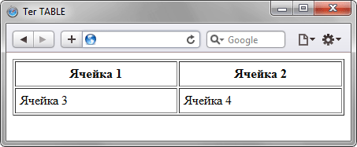

Благодаря универсальности таблиц, большому числу параметров, управляющих их видом, таблицы надолго стали определенным стандартом для верстки веб-страниц. Таблица с невидимой границей представляет собой словно модульную сетку, в блоках которой удобно размещать элементы веб-страницы. Тем не менее, это не совсем правильный подход, ведь каждый объект HTML определен для своих собственных целей и если он используется не по назначению, причем повсеместно, это значит, что альтернатив нет. Так оно и было долгое время, пока на смену таблицам при верстке сайтов не пришли слои. Это не значит, что слои теперь используются сплошь и рядом, но тенденция уже наметилась четко — таблицы применяются для размещения табличных данных, а слои — для верстки и оформления.
Таблица состоит из строк и столбцов ячеек, которые могут содержать текст и рисунки. Обычно таблицы используются для упорядочения и представления данных, однако возможности таблиц этим не ограничиваются. C помощью таблиц удобно верстать макеты страниц, расположив нужным образом фрагменты текста и изображений.
Для добавления таблицы на веб-страницу используется тег <table>. Этот элемент служит контейнером для элементов, определяющих содержимое таблицы. Любая таблица состоит из строк и ячеек, которые задаются соответственно с помощью тегов <tr> и <td>. Таблица должна содержать хотя бы одну ячейку (пример 12.1). Допускается вместо тега <td> использовать тег <th>. Текст в ячейке, оформленной с помощью тега <th>, отображается браузером шрифтом жирного начертания и выравнивается по центру ячейки. В остальном, разницы между ячейками, созданными через теги <td> и <th> нет.
Пример 12.1. Создание таблицы
<!DOCTYPE HTML PUBLIC "-//W3C//DTD HTML 4.01//EN" "http://www.w3.org/TR/html4/strict.dtd">
<html>
<head>
<meta http-equiv="Content-Type" content="text/html; charset=utf-8">
<title>Тег TABLE</title>
</head>
<body>
<table border="1" width="100%" cellpadding="5">
<tr>
<th>Ячейка 1</th>
<th>Ячейка 1</th>
<th>Ячейка 2</th>
</tr>
<tr>
<td>Ячейка 3</td>
<td>Ячейка 4</td>
</tr>
</table>
</body>
</html>
Порядок расположения ячеек и их вид показан на рис. 12.1.

Рис. 12.1. Результат создания таблицы с четырьмя ячейками